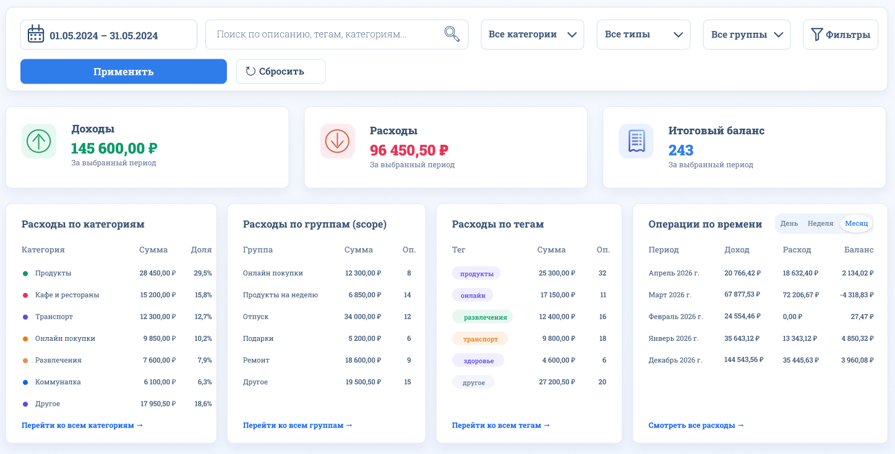

Данные разбросаны
Операции могут быть в разных банках и счетах.
О проекте FinTracker
Сервис помогает собрать транзакции из разных источников, структурировать операции и получить более точную картину доходов и расходов.

FinTracker нужен, чтобы собрать данные из разных источников, убрать искажения от переводов и дать пользователю гибкую структуру для анализа.
Операции могут быть в разных банках и счетах.
Переводы между своими счетами попадают в расходы.
Не хватает удобной группировки по категориям, тегам и событиям.
Сервис позволяет загружать транзакции, вручную уточнять операции, использовать категории, теги и группы scope, а также исключать переводы и компенсации из аналитики.
Импорт транзакций из внешних источников.
Ручное редактирование операций.
Категории, теги и группы scope.
Исключение переводов и компенсаций.
Обзор функциональности FinTracker без технических деталей реализации.
Импорт операций из внешних источников.
Единое место для операций и связей.
Уточнение описаний, сумм и категорий.
Поиск по описанию, тегам и периодам.
Структурирование расходов и доходов.
Дополнительные метки для анализа.
Объединение операций по событиям.
Расчёт финансовых показателей.
Анализ по месяцам и диапазонам.
Детализация транзакций.
Сервис не ограничивается логикой одного банка и поддерживает пользовательскую структуру данных.
Операции из разных источников в одном месте.
Периоды, категории, теги и scope.
Переводы и компенсации можно исключать.
Пользователь сам задаёт правила группировки.
Для пользователей, которым важно лучше контролировать расходы и гибко структурировать финансовые данные.
Понять, куда уходят деньги.
Собрать операции из разных источников.
Выйти за рамки отчётов банка.
Самостоятельно структурировать данные.
FinTracker поддерживает анализ по времени, категориям, тегам и scope, исключает переводы и компенсации, рассчитывает доходы, расходы и итоговую разницу.

общая сумма доходов

общая сумма расходов

итоговый баланс
Текущая версия демонстрирует базовую механику загрузки, структурирования и анализа транзакций. Проект ориентирован на развитие инструмента для более точной аналитики личных финансов.